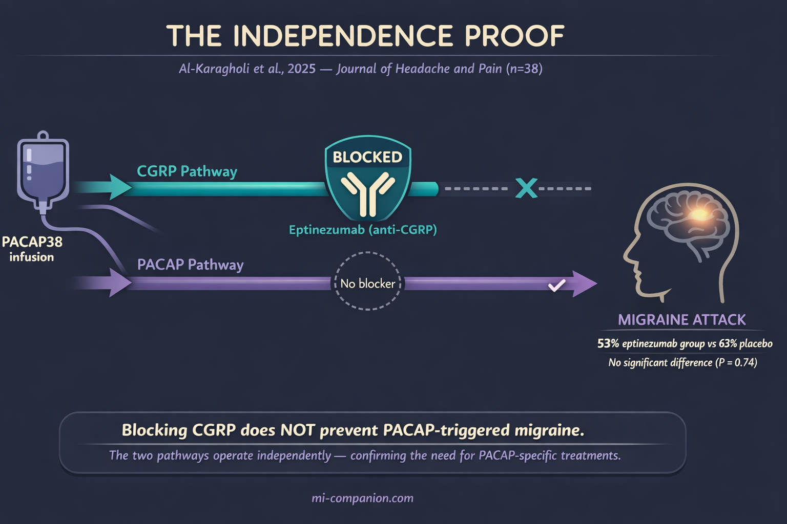
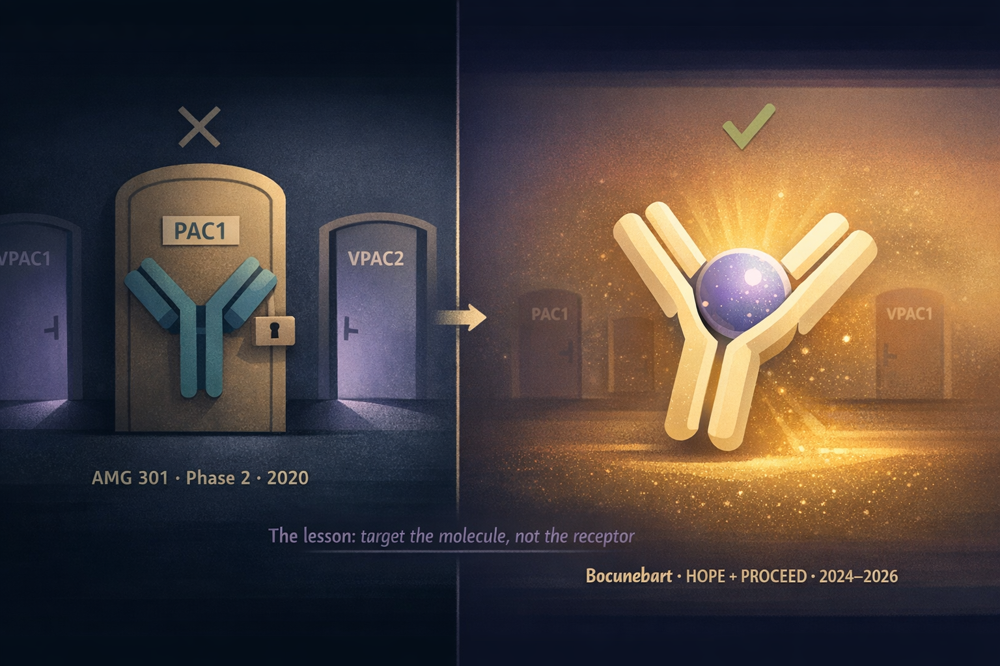
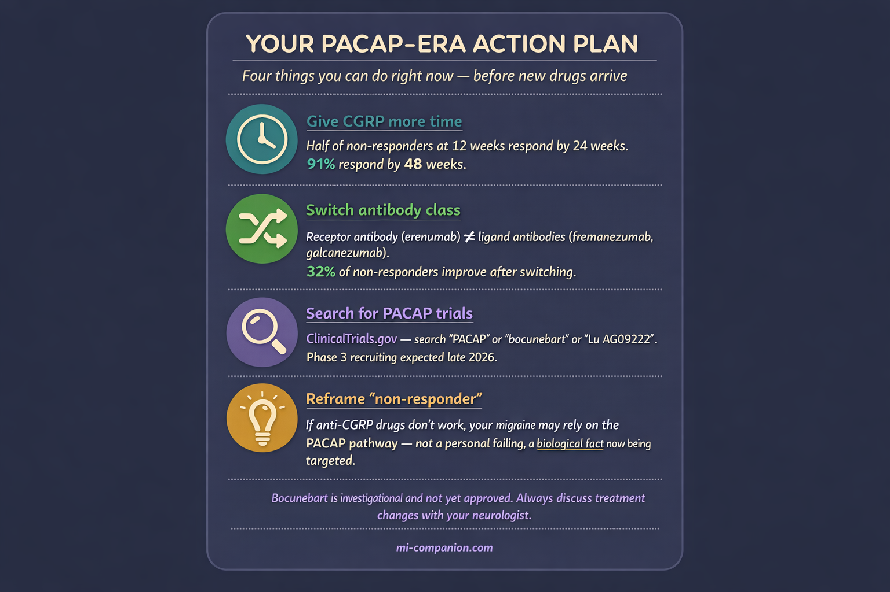

By Rustam Iuldashov
30 years lived experience with chronic migraine | Sources: 28 peer-reviewed references including The New England Journal of Medicine (n=237), The Journal of Headache and Pain (n=38), Cephalalgia (n=343), Brain (n=24) | Last updated: March 13, 2026
Medical Review: This content is based on peer-reviewed research from The New England Journal of Medicine, Brain, Cephalalgia, The Journal of Headache and Pain, Nature Reviews Neurology, Neurobiology of Disease, Advances in Therapy, and Frontiers in Molecular Neuroscience.
Important Notice: This article is for informational purposes only and does not replace professional medical advice. The author is not a licensed physician or healthcare professional. The drugs discussed (bocunebart/Lu AG09222) are investigational and not yet approved. Always consult your doctor before making changes to your treatment plan.
Key Takeaways
- PACAP is a migraine-triggering neuropeptide that operates completely independently of CGRP — the target of all current migraine-specific preventive drugs[7][9][10]
- 40–70% of people don’t get adequate relief from anti-CGRP therapies — and even many “responders” achieve only partial improvement. PACAP may be driving their remaining attacks through a separate biological pathway[1][2][3]
- A 2025 randomized controlled trial proved that blocking CGRP does not prevent PACAP-triggered migraines — the two pathways are independent[9]
- The first PACAP drug (AMG 301, blocking the PAC1 receptor) failed. The breakthrough came from targeting the PACAP molecule itself[11][13]
- Bocunebart (Lu AG09222) showed positive results in both the HOPE trial (NEJM, 2024) and the PROCEED trial (February 2026). Phase 3 expected late 2026[13][16]
- If anti-CGRP drugs haven’t worked — or have only partially worked — you’re not untreatable. A second biological highway exists, and treatments are now in advanced clinical development[16][19]
The drugs arrived like a promise kept.
In 2018, anti-CGRP monoclonal antibodies became the first migraine treatments ever designed specifically around the disease itself — not borrowed from cardiology, not repurposed from psychiatry. Millions of people felt the ceiling lift. But in the years that followed, an uncomfortable pattern emerged: 40 to 70% of patients who tried these drugs didn’t get enough relief.[1][2] For roughly one in three, the needle barely moved at 12 weeks.[3]
That wasn’t a failure of the drugs. It was a clue. Migraine isn’t a one-pathway disease. And in February 2026, a clinical trial confirmed what researchers had suspected for over a decade — a second major pathway drives migraine, completely independent of CGRP.[16] Its name is PACAP. And it changes everything we thought we knew about who can be helped.
The Molecule That Triggers Migraine on Demand
Copenhagen, 2009. Professor Messoud Ashina takes twelve people with migraine, hooks them up to an IV, and infuses a molecule called PACAP38 — pituitary adenylate cyclase-activating polypeptide. Seven develop full migraine attacks. On placebo: zero.[4]
When you can inject a molecule and reliably trigger the exact disease you’re studying, that’s as close to a smoking gun as neuroscience gets.
PACAP is a neuropeptide — a chemical messenger woven into the same trigeminal nerve fibers and parasympathetic neurons that drive migraine pain.[5][6] Think of it as CGRP’s sibling. Both inhabit the structures that light up during an attack. Both dilate cranial arteries. Both activate the trigeminal system. But they work through completely different doors.
CGRP signals primarily through one receptor type: CLR/RAMP1. PACAP signals through three — PAC1, VPAC1, and VPAC2. And the difference goes deeper than the number of doors. PACAP doesn’t just knock — it uses entirely different internal wiring inside the cell (pathways called Epac/MAPK and Gq-calcium signaling) that CGRP never touches.[7][8] In the trigeminal ganglion — the hub of migraine pain — CGRP appears in 35–50% of neurons, PACAP in about 20%. Only 9% of neurons express both.[7] Many PACAP-releasing neurons don’t contain CGRP at all.
This isn’t a different flavor of the same pathway. It’s a parallel highway.
The Independence Proof
The critical question hung over the field for years: does blocking CGRP also shut down PACAP? If yes, current drugs should eventually work for everyone. If no, millions of people need something entirely different.
In April 2025, the answer arrived. Al-Karagholi and colleagues at the Danish Headache Center ran a clean experiment: give migraine patients eptinezumab — one of the most potent anti-CGRP antibodies available — then infuse them with PACAP38.[9] If CGRP blockade could prevent PACAP-triggered migraines, the eptinezumab should have shielded them.
It didn’t. Migraine attacks occurred in 53% of the eptinezumab group and 63% of the placebo group. No significant difference.[9] PACAP triggered full migraine attacks straight through CGRP blockade — as if the blockade wasn’t there.
The diagram below captures what happened — and why it matters. One pathway blocked, one wide open, same result.

Mouse studies had been pointing here since 2022: PACAP-driven pain behaviors — mechanical allodynia, photophobia — don’t respond to anti-CGRP therapies.[10] The two pathways run side by side. CGRP and PACAP are partners in migraine, but they operate on independent lines.
What this means for you personally
If you’ve tried erenumab, fremanezumab, galcanezumab, or eptinezumab without meaningful relief, this research offers a validated biological explanation: your migraine may run primarily on the PACAP channel. Until now, nothing could turn that channel off.
The Wrong Door
Science doesn’t move in straight lines. In 2020, Amgen tested AMG 301 — a drug designed to block the PAC1 receptor, one of PACAP’s three receptors. The logic was reasonable: PACAP has the highest selectivity for PAC1, so blocking it should break the cascade.[11]
In a Phase 2 trial with 343 patients, AMG 301 was indistinguishable from placebo. Monthly migraine days dropped 2.5 on placebo and 2.2 on both drug doses.[11] No signal. Not a whisper.
The failure stung, but it taught the field something essential. PACAP doesn’t funnel through one receptor. It signals through PAC1, VPAC1, VPAC2, and possibly the mast cell receptor MRGPRX2.[7][12] Blocking one door while three others stood open was never going to work.
The lesson reshaped an entire research program: stop targeting receptors. Target the molecule itself.
Bocunebart: The Molecular Sponge
Lundbeck took the opposite approach. Instead of blocking a receptor, they built bocunebart — the drug’s international nonproprietary name, with Lu AG09222 as its research code — a humanized monoclonal antibody that binds directly to PACAP, capturing it before it can reach any receptor.[13] A molecular sponge that soaks up the trigger before it pulls the alarm.
The logic is elegant. If PACAP works through multiple receptors and you don’t know which combination matters, intercept it upstream. Neutralize the messenger, not the mailbox.
The illustration below captures this lesson visually — one locked door that failed, versus one sponge that succeeded.

The first test came in the HOPE trial, published September 2024 in the New England Journal of Medicine. Small and tightly designed: 237 adults with migraine who had failed 2–4 previous preventive treatments, randomized to a single IV infusion of bocunebart or placebo.[13]
Results: the high-dose group (750 mg) experienced 6.2 fewer migraine days per month, compared to 4.2 for placebo — a 2.0-day advantage.[13] Among those receiving the high dose, 32% achieved at least a 50% reduction in monthly migraine days, versus 27% on placebo.[14] The drug was well tolerated.
For a single infusion in a population often loaded with side effects that drove most people to quit other therapies, the NEJM editorial called it proof of concept for an entirely new mechanism in migraine treatment.[15]
One infusion. One new pathway. The signal was real.
The effect sizes were similar to those seen in early trials of the target of all current migraine-specific preventive drugs — suggesting PACAP-targeted therapy could follow a comparable development trajectory.
February 2026: PROCEED Confirms
On February 12, 2026, the bigger test landed. The Phase 2b PROCEED trial — 431 patients, 14 countries, monthly IV infusions for three months.[16][17]
PROCEED enrolled people who had failed 1–4 previous preventive medications. The primary endpoint: change in monthly migraine days over 12 weeks compared to placebo. Bocunebart delivered a statistically significant reduction, with a dose-response relationship — higher doses produced greater benefit.[16][18] The drug was generally well tolerated. No new safety signals.[16]
⚠︀ When to Seek Emergency Help
Any new headache that feels like “the worst headache of your life,” comes on suddenly, or is accompanied by fever, stiff neck, confusion, seizures, or vision loss is NOT a typical migraine — it requires immediate emergency evaluation. If you are starting, stopping, or switching any preventive migraine medication and experience unusual or severe symptoms, contact your prescribing doctor immediately.
Do not use this article to make medication decisions on your own.
A key detail: Lundbeck had initially tested both a subcutaneous (self-injection) and IV formulation. In March 2025, an interim analysis showed the subcutaneous route was unlikely to succeed, so the company pivoted to IV-only.[19] Sometimes the right molecule needs the right delivery method. Sometimes the courage to cut a losing arm saves the entire program.
Lundbeck will now approach regulators to discuss Phase 3 design. Pivotal trials are expected in the second half of 2026.[16][19]
What This Means for You Today
Bocunebart is not available yet. Phase 3, regulatory review, manufacturing — even in the best scenario, approval is years away.
But this science has practical implications right now.
Don’t Give Up on CGRP Too Quickly
Among patients who don’t respond at 12 weeks, roughly half become responders by 24 weeks.[3] One large multicenter study found 91.3% of migraine patients eventually responded within 48 weeks.[20] But “response” in clinical terms means a 50% reduction in migraine days — not freedom from the disease. If you went from 20 migraine days to 10, you’re counted as a responder, even if those 10 days still steal your life. PACAP-targeted treatments aren’t just for the 9% who never respond at all — they’re potentially relevant for anyone whose migraine is only partially controlled by CGRP blockade. If your doctor wants to stop after three months, the 91% data is your argument for continuing — and the PACAP research is your argument for why the conversation shouldn’t end there.
If One CGRP Drug Fails, Switch Classes
Two types exist: antibodies targeting the CGRP molecule (fremanezumab, galcanezumab, eptinezumab) and one targeting the receptor (erenumab). Switching classes has shown roughly 32% of non-responders gain meaningful improvement.[21] Same pathway, different angle of attack.
Ask About Clinical Trials
Your neurologist may be recruiting for PACAP-targeting studies. Search ClinicalTrials.gov for “PACAP,” “Lu AG09222,” or “bocunebart.” Being early to a new drug class is how many people with severe migraine have found relief before the rest of the world catches up.
Reframe What “Non-Responder” Means
If anti-CGRP drugs haven’t worked for you, it doesn’t mean you’re beyond help. It likely means your migraine biology relies on pathways beyond CGRP — like PACAP. That’s not a personal failing. It’s neurochemistry. And it’s being targeted right now.

The Next Chapters
CGRP was Chapter 1. PACAP is Chapter 2. More chapters are coming. Researchers are already investigating vasoactive intestinal peptide (VIP), amylin, and the nitric oxide–cGMP pathway as additional migraine mechanisms.[22][23][24]
An estimated 2.5 to 3 million patients across the G7 countries remain inadequately treated with every currently approved therapy.[19] PACAP-targeted drugs won’t solve migraine for everyone. But for those whose biology runs on a track that current drugs can’t reach, this is the most significant advance since CGRP itself.
After 30 years of living with migraine, I’ve watched every “breakthrough” that turned out to be ordinary. PACAP doesn’t feel ordinary. The science is published in the NEJM, confirmed in a multi-dose international trial, built on a clear biological mechanism that explains — for the first time — why current treatments fail for so many people.
This is what progress looks like in 2026. Not a cure. A second pathway toward control.
For the millions of us still searching, that’s not nothing. That’s a different life waiting to begin.
⚕︀ Important Medical Disclaimer
This article is for informational and educational purposes only and does not constitute medical advice, diagnosis, or treatment. The author, Rustam Iuldashov, is not a licensed physician, neurologist, or healthcare professional. He is a patient advocate with 30 years of personal experience living with chronic migraine.
All clinical claims in this article are sourced from peer-reviewed research published in indexed medical journals. Study designs and sample sizes are noted where applicable.
Always consult a qualified healthcare provider for questions about your individual health, migraine treatment, or medication decisions. Never start, stop, or switch preventive migraine medications without discussing it with your doctor first.
The drugs discussed in this article (bocunebart/Lu AG09222) are investigational and not yet approved by the FDA or any other regulatory authority. Their efficacy and safety have not been fully established. This content was last reviewed for accuracy on March 13, 2026.
References
- Ashina M, Phul R, Khodaie M, Löf E, Florea I. “A Monoclonal Antibody to PACAP for Migraine Prevention.” N Engl J Med, 391:800-809 (2024). doi:10.1056/NEJMoa2314577. Study design: Phase 2 RCT. n=237.
- Loder E. “A New Antibody Treatment for Migraine.” N Engl J Med, 391:855-857 (2024). doi:10.1056/NEJMe2406401. Study design: Editorial.
- Altamura C, Cevoli S, Brunelli N, et al. “Late Response to Anti-CGRP Monoclonal Antibodies in Migraine: A Multicenter Prospective Observational Study.” Neurology, 101(11):e1105-e1117 (2023). doi:10.1212/WNL.0000000000207600. Study design: Multicenter prospective observational. n=771.
- Schytz HW, Birk S, Wienecke T, Kruuse C, Olesen J, Ashina M. “PACAP38 Induces Migraine-like Attacks in Patients with Migraine Without Aura.” Brain, 132(Pt 1):16-25 (2009). doi:10.1093/brain/awn307. Study design: RCT (double-blind crossover). n=24.
- Vaudry D, Falluel-Morel A, Bourgault S, et al. “Pituitary Adenylate Cyclase-Activating Polypeptide and Its Receptors: 20 Years After the Discovery.” Pharmacol Rev, 61(3):283-357 (2009). doi:10.1124/pr.109.001370. Study design: Comprehensive review.
- Frimpong-Manson K, Ortiz YT, McMahon LR, Wilkerson JL. “Advances in Understanding Migraine Pathophysiology: A Bench to Bedside Review.” Front Mol Neurosci, 17:1355281 (2024). doi:10.3389/fnmol.2024.1355281. Study design: Narrative review.
- Della Pietra A, Kuburas A, Russo AF. “PACAP Versus CGRP in Migraine: From Mouse Models to Clinical Translation.” Cephalalgia, 45(9):03331024251364242 (2025). doi:10.1177/03331024251364242. Study design: Narrative review.
- Tasma Z, Hay DL. “Decoding PACAP Signaling: Splice Variants, Pathways and Designer Drugs.” Cephalalgia, (2025). doi:10.1177/03331024251363560. Study design: Narrative review.
- Al-Karagholi MAM, Zhuang ZA, Beich S, Ashina H, Ashina M. “PACAP38-Induced Migraine Attacks Are Independent of CGRP Signaling: A Randomized Controlled Trial.” J Headache Pain, 26(1):79 (2025). doi:10.1186/s10194-025-02022-2. Study design: RCT (double-blind, placebo-controlled). n=38.
- Ernstsen C, Christensen SL, Rasmussen RH, et al. “The PACAP Pathway Is Independent of CGRP in Mouse Models of Migraine: Possible New Drug Target?” Brain, 145(7):2450-2460 (2022). doi:10.1093/brain/awab419. Study design: Preclinical (animal model).
- Ashina M, Doležil D, Bonner JH, Zhou L, Klatt J, Picard H, Mikol DD. “A Phase 2, Randomized, Double-blind, Placebo-controlled Trial of AMG 301, a PACAP PAC1 Receptor Monoclonal Antibody for Migraine Prevention.” Cephalalgia, 41(1):33-44 (2021). doi:10.1177/0333102420970889. Study design: Phase 2 RCT. n=343.
- Pellesi L, Chalmer MA, Guo S, et al. “Targeting PACAP: Beyond Migraine to Cluster, Menstrual, and Post-traumatic Headaches.” Adv Ther, 42:2078-2088 (2025). doi:10.1007/s12325-025-03166-y. Study design: Narrative review.
- Ashina M, Phul R, Khodaie M, Löf E, Florea I. “A Monoclonal Antibody to PACAP for Migraine Prevention.” N Engl J Med, 391:800-809 (2024). doi:10.1056/NEJMoa2314577. Study design: Phase 2 RCT (HOPE trial). n=237.
- Lundbeck / Clinical Trials Arena. “Lundbeck’s Migraine Prevention Drug Meets Primary Endpoint in Phase IIb Trial.” February 12, 2026. Data: HOPE trial 50% responder rates; GlobalData market projections.
- Loder E. “A New Antibody Treatment for Migraine.” N Engl J Med, 391:855-857 (2024). doi:10.1056/NEJMe2406401. Study design: Editorial.
- H. Lundbeck A/S. “Lundbeck Announces Positive Phase IIb Top-line Results with Bocunebart (Lu AG09222; Anti-PACAP mAb) in Migraine Prevention.” Press release, February 12, 2026.
- PROCEED Trial. ClinicalTrials.gov Identifier: NCT06323928. Study design: Phase 2b, adaptive, dose-finding RCT. n=431.
- Pharmaphorum. “Lundbeck Preps Phase 3 for Migraine Prevention Drug.” February 2026. Reporting on PROCEED dose-response relationship.
- Lundbeck / PRNewswire. “Following a Planned Interim Analysis in the PROCEED Trial, Lundbeck Expands the Dose Finding to Intravenous Administration of Lu AG09222.” March 31, 2025. SC formulation discontinued; 2.5–3M inadequately treated patients estimate.
- Barbanti P, Egeo G, Aurilia C, et al. “Ultra-late Response (>24 Weeks) to Anti-CGRP Monoclonal Antibodies in Migraine: A Multicenter, Prospective, Observational Study.” J Neurol, 271:1949-1960 (2024). doi:10.1007/s00415-023-12103-4. Study design: Multicenter prospective observational. n=1039.
- Overeem LH, Peikert A, Hofacker MD, et al. “Effect of Antibody Switch in Non-Responders to a CGRP Receptor Antibody Treatment in Migraine.” Cephalalgia, 42(4):291-301 (2022). doi:10.1177/03331024211048765. Study design: Multi-center retrospective cohort. n=25.
- Kuburas A, Russo AF. “Shared and Independent Roles of CGRP and PACAP in Migraine Pathophysiology.” J Headache Pain, 24(1):34 (2023). doi:10.1186/s10194-023-01569-2. Study design: Review.
- Thapa C, et al. “The Role of Biomarkers PACAP and VIP in Chronic and Episodic Migraines: A Meta-analysis.” Acta Neurol Scand, 2024:2954374 (2024). doi:10.1155/2024/2954374. Study design: Meta-analysis. n=503.
- Russo AF, Kaiser EA. “CGRP and Migraine: Real World Insights and Future Therapeutic Directions.” Annu Rev Med, 77:415-432 (2025). doi:10.1146/annurev-med-050224-111631. Study design: Review.
- Burch RC, Buse DC, Lipton RB. “Migraine: Epidemiology, Burden, and Comorbidity.” Neurol Clin, 37(4):631-649 (2019). doi:10.1016/j.ncl.2019.06.001. Study design: Review.
- Al-Mahdi Al-Karagholi MA, Guo S, Olesen J. “Role of PACAP in Migraine: An Alternative to CGRP?” Neurobiol Dis, 176:105946 (2023). doi:10.1016/j.nbd.2022.105946. Study design: Review.
- Ashina H, Christensen RH, Hay DL, et al. “Pituitary Adenylate Cyclase-Activating Polypeptide Signalling as a Therapeutic Target in Migraine.” Nat Rev Neurol, 20(11):660-670 (2024). doi:10.1038/s41582-024-01009-y. Study design: Review.
- Decker B, et al. “Monoclonal Antibodies Against CGRP(R): Non-responders and Switchers: Real World Data from an Austrian Case Series.” BMC Neurol, 23:167 (2023). doi:10.1186/s12883-023-03203-9. Study design: Retrospective real-world case series. n=171.

How We Create Content
- Peer-reviewed sources only. The New England Journal of Medicine, Brain, Cephalalgia, The Journal of Headache and Pain, Nature Reviews Neurology, Neurobiology of Disease, Advances in Therapy, Frontiers in Molecular Neuroscience, Pharmacological Reviews, Annual Review of Medicine, BMC Neurology.
- Study transparency. Study design and sample sizes noted for all clinical references.
- Source verification. All claims backed by numbered references with DOI links.
- Experience + Science. 30 years personal migraine experience combined with peer-reviewed evidence.
- Regular updates. Articles reviewed when significant new research emerges.
- No conflicts of interest. No funding from H. Lundbeck A/S, Amgen, or any pharmaceutical company developing PACAP- or CGRP-targeted therapies.
Track Your Treatment Response
Whether you’re on anti-CGRP therapy, waiting for PACAP trials, or building your case for a new approach — Migraine Companion helps you log attacks, medication timing, and patterns so you and your neurologist can make decisions based on your data, not memory.
Last reviewed: March 2026
Next scheduled review: September 2026